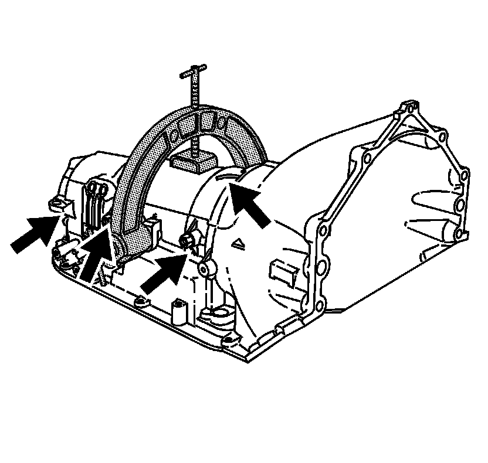

Transmission Case Inspection
Transmission Case Inspection
Tools Required
J 36850 Transjel(R) Lubricant
Notice: Use J 36850 or equivalent during assembly in order to retain checkballs or to lubricate components. Lubricants other than the recommended assembly lube changes the transmission fluid characteristics and causes undesirable shift conditions or filter clogging.
1. Inspect the transmission case for the following:
^ Cracks
^ Porosity
^ Connected passages
^ Scored bushing
^ Excess gasket material left on any case surfaces
2. Inspect all threaded holes for damage. Use a Heli-Coil kit in order to repair damage to the threaded holes.
3. Air check all fluid passages. Refer to the hydraulic fluid flow diagrams and the fluid passage in Fluid Passages.
4. Inspect the manual 2-1 band servo bore and the low and reverse band servo bore for the following:
^ Porosity
^ Burrs
^ Damage
5. Inspect the intermediate clutch plate lugs for damage.
6. Inspect the retainer ring grooves for damage.
7. Inspect the case center support bolt hole for damage.

8. Inspect the oil cooler pipe fitting holes for damage.
9. Inspect the vent pipe for damage.
10. Inspect the lube oil orifice cup plug with seal (some models) for damage.
11. Inspect the low/reverse band anchor pins and intermediate band anchor pins for proper position and tightness.
12. Inspect the manual shaft bore for damage and porosity.
Notice: Do not reuse cleaning solvents. Previously used solvents may deposit sediment which may damage the component.
13. Clean all of the transmission case components using clean solvent.